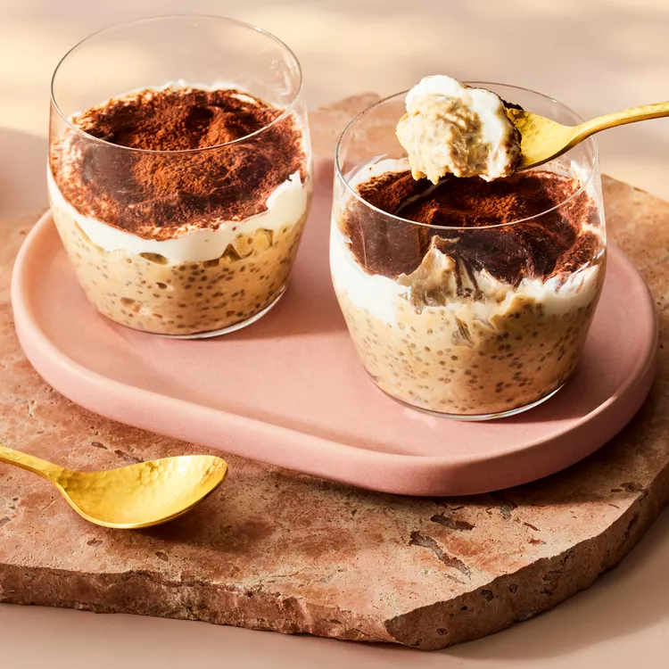

Tiramisu, a classic Italian dessert, serves as flavor inspiration for these overnight oats. Instant espresso powder adds a touch of bitterness to the dish, which gets balanced by the sweetness of the maple syrup. We top each serving with yogurt for some tanginess, but you could also try swapping in ricotta. A dusting of cocoa powder on top serves as a nod to the dessert's iconic look. These oats are meal-prep-friendly, but if you find your oats becoming too dry as they sit in the fridge, add more almond milk until they're loosened to your desired consistency.

Whisk almond milk, 1/4 cup yogurt, 1 1/2 tablespoons maple syrup, chia seeds, espresso powder, vanilla and salt together in a large bowl. Add oats; stir until completely coated and submerged. Cover and refrigerate for at least 4 hours and up to 4 days.
Combine the remaining 3/4 cup yogurt and 1 tablespoon maple syrup in a small bowl.
To serve, spoon 2/3 cup oat mixture into a small jar or bowl. Top with 3 tablespoons maple yogurt. Use a small fine-mesh sieve to dust with 1/4 teaspoon cocoa.
Refrigerate oats (Step 1) for up to 4 days.